Click the buttons below to access FASTA sequences for DNABII mAb
and PNAG mAb
Concept
A major constituent of the biofilm matrix is polysaccharide intercellular adhesin (PIA), also known as polymeric N-acetyl-glucosamine (PNAG). The PIA polymer plays an important role in the structural integrity of biofilms in vitro and in vivo, however numerous studies have identified S. aureus strains capable of forming ica-independent biofilms where the matrix components of these biofilms were later identified as proteins and eDNA, which function as intercellular adhesins in the absence of PIA. Hence, using either eDNA and associated structural proteins that are present in the absence of PIA (such as DNABII proteins) and PIA as biomarkers for the composite lateral flow test will ensure that there is a greater likelihood that the test will have greater accuracy and sensitivity.
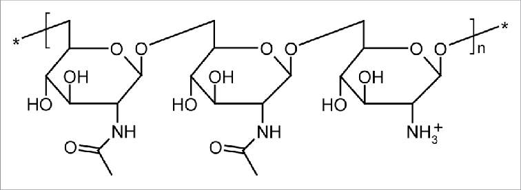
Figure 1: Structure of polymeric N-acetyl-glucosamine (PNAG), also known as PIA. PNAG is a repeating polysaccharide chain that is used as an essential component for maintaining biofilm integrity.
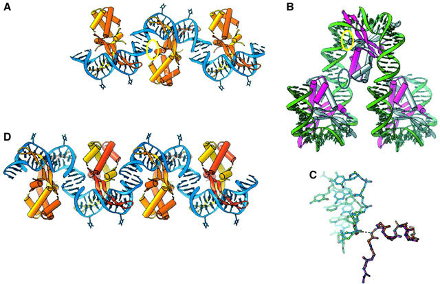
Figure 2: DNABII proteins associated with eDNA in the extrapolymeric substance (EPS) of the biofilm.
The lateral flow immunoassay (LFA) is going to be
used to indicate the presence of the biomarkers to dictate future action
for treatment. A lateral flow immunoassay is a simple diagnostic device
used to confirm the presence or absence of a target analyte, which is our
chosen biomarkers. LFAs typically contain a control line to confirm the
test is working properly, along with one or more target or test lines.
They are designed to incorporate intuitive user protocols and require
minimal training to operate. So how do sandwich LFAs work?
The sample pad acts as the first stage of the absorption process, and in some cases contains a filter, to ensure the accurate and controlled flow of the sample into the rest of the test.
The conjugate pad, which stores the conjugated labels and antibodies, will receive the sample. If the target is present, the immobilized conjugated antibodies and labels will bind to the target and continue to migrate along the test.
As the sample moves along the device the binding reagents situated on the nitrocellulose membrane will bind to the target at the test line. A coloured line will form and the density of the line will vary depending on the quantity of the target
present. Some targets may require quantification to determine target concentration. This is where a rapid test can be combined with a reader to provide quantitative results in order to ensure the levels detected in the reader are above that
of a healthy human sample.
The sample will pass through the nitrocellulose membrane into the absorbent pad. The absorbent pad will absorb the excess sample.
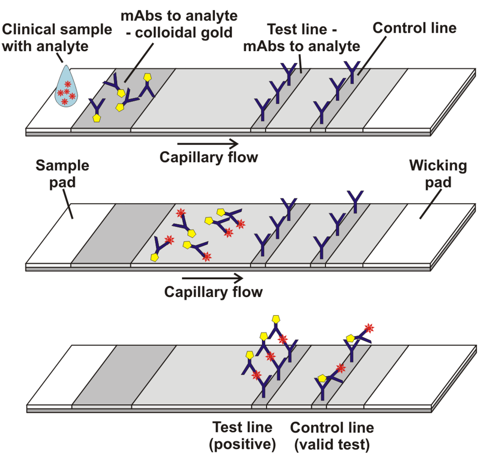
Figure 3: How general LFAs work.
Now, we have to identify four things,
twice, for the composite test to work, which are a conjugated
nanoparticle to the antigen specific antibody and a capture
antibody and lastly the chosen antigen/biomarker. The
conjugated nanoparticle would best be gold nanoparticles
(GNPs) because of their cost effectiveness, stability,
and well-established applications in LFAs. Next, the
chosen biomarkers would be a common protein from
the class of DNABII proteins called integrated
host factor, IHF, (also associated with biofilm stability
and structural integrity in the absence of PIA) and PIA polymers.
Lastly, the antibody conjugated to GNP and the capture antibody
for the biomarkers would have to be monoclonal antibodies generated
in genetically engineered E.coli bacterium.
DNABII (IHF) Antibodies
Integrated Host Factor DNABII Protein Background
The DNABII family of proteins are a universal component that provides structural integrity to biofilms. The DNABII family members include IHF, which is a heterodimer of IFA and IHFB and histone-like protein (HU). Both HU and IHF have a conserved sequence homology and as a result have a conserved protein architecture. This conserved architecture enables them to both bind to already bent DNA strands such as cruciforms or Holliday junctions and bend DNA by inserting itself into the two antiparallel beta ribbons into the DNA minor groove. Furthermore, when biofilms are exposed to polyclonal rabbit antiserum directed against IHF isolated from E.coli, complete collapse of the biofilm occurs with release of resident bacteria. These observations suggested that the DNABII proteins and eDNA might serve as universal biofilm constituents that not only contribute to structural integrity, but could also provide a mechanism for multispecies interaction and facilitate the development of mixed microbial biofilm consortia as typically exist in nature. In regards to sampling and purifying DNABII proteins from a biofilm sample EPS, it can exist in an off or on state, with “off” being when it is not associated with eDNA and “on '' being when it is associated with eDNA. Literature suggests that anti-HIF antibodies have the greatest degree of binding when DNABII proteins are in an “off” state because when DNABII proteins are bound to DNABII, their DNA binding tip regions are concealed and unable to attach to the antibody.
In terms of designing the antibody peptide, researchers used a known crystal structure of IHF from E. coli along with the deduced amino acid sequence of IHFNTHI (Nontypeable Haemophilus Influenzae, which is has similar properties in biofilms as S.aureus, but causes otitis media rather than PJI) to approximate the location of the 20-mer synthetic peptides used for the generation of monoclonal antibodies (MAbs). The ihfA5 NTHI is the tip directed part of HIF, while ihfA3 is the tail directed subunit of HIF.
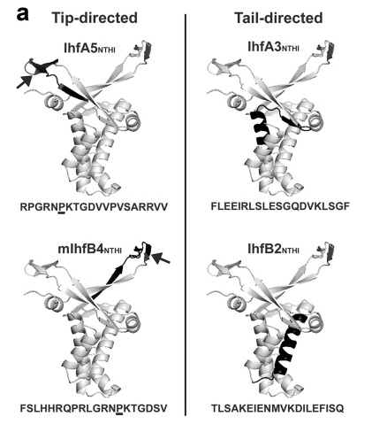
Figure 4: Structure of IHF, which is a member of the DNABII family of proteins. The bolded regions indicate two possible regions that the antibody can attach to, be it the tip or tail of the IHF protein.
How “good” is the protein at its intended function?
The antibody regardless if it is developed as a full or Fab fragment will express the same amount of binding activity as long as the antibody is folded properly and the attachment site on the antigen is accessible to the antibody. Hence, either an entire antibody (which would need to be developed in the cytoplasm with a genetically engineered E.coli SHuffle that has a lower reductive cytoplasmic environment) or the Fab fragment would be equally effective for the purposes of having one antibody conjugated with the gold nanoparticle (GNPs will be conjugated with any protein) and being the capture antibody on the test line.
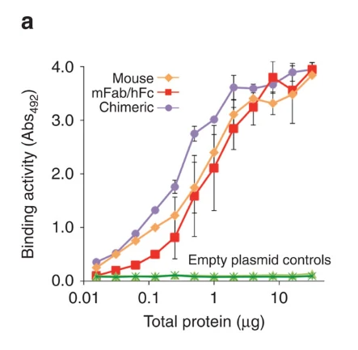
Figure 5: Binding efficacy of recombinantly produced fully, fab, or chimeric antibodies.
Has it been recombinantly expressed before? Is it membrane-bound or soluble?
Since DNABII is a family of proteins,
the protein that has been most commonly used as an antigen
for antibody development is IHF in Non-typeable Haemophilus
influenzae (NTHI), which has similar properties and proteins
in the EPS as S.aureus biofilm strains. For the purposes of
this experiment, the IHF DNABII proteins architecture is
highly conserved amongst biofilm developing strains, so
antibodies developed for IHF found in NTHI can also be
applied for S.aureus IHF. Antibodies are also soluble and can be
easily conjugated onto GNP because of this property.
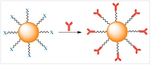
Figure 6: Conjugation of antibody to GNP.
Does it have disulfide bonds?
Since we are primarily using the IgG family of antibodies, cysteine residues that form inter-chain disulfide bonds are located in the hinge region with the exception of the third cysteine residue of the heavy chain in IgG2, IgG3 and IgG4, which is located between the interface of VH and CH1 domains. Therefore, inter-chain disulfide bonds are highly solvent exposed. Due to the presence of disulfide bonds, there are two routes that this project can take. The first is to develop the antibody in the periplasmic region of the E.coli bacterium, or to use a genetically engineered E.coli (also known as SHuffle) with a cytoplasmic region that is less reductive to allow for the formation of disulfide bonds.
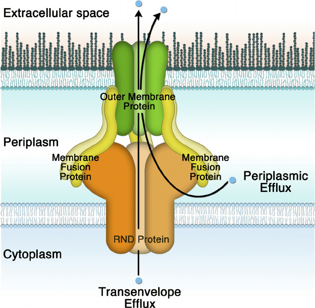
Figure 7: Periplasmic, cytoplasmic, and extracellular region of bactria and the intermembrane protein that allows for exchange of materials between the three regions.
How big is the protein?
For a full IgG antibody, it will be a large molecule, having a molecular weight of approximately 150 kDa, composed of two different kinds of polypeptide chain. On the other hand, a nano IgG antibody (just the fab fragment) relatively small, with a size of around 50 KDa it is just the antigen-binding domains of an antibody molecule, containing one constant and one variable domain of each of the heavy and the light chains.
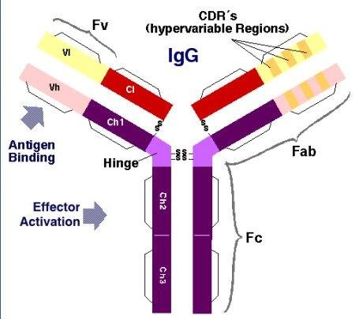
Figure 8: Structure of IgG antibody (the family of antibodies that will be used to create the mAb). The fab fragment is the hinge and antigen binding sites, while an entire antibody is composed of the Fab and Fc fragments.
Does it have unique cofactors/prosthetic groups or post-translational modifications you have to consider?
There can be additional post-translational modifications that can be considered to prolong the half-life of the IgG antibody, such as using cleavage of different light and heavy groups on the antibody to make the isotope more resistant to proteases in the microenvironment. However, considering this will not be within a biological system other than e.coli, this step is not necessary.
PIA Antibodies
Background
The extracellular polymeric substances of staphylococcal biofilms are the polysaccharide intercellular adhesin (PIA), extracellular-DNA, proteins, and amyloid fibrils. PIA is a poly-β(1-6)-N-acetylglucosamine (PNAG), partially deacetylated, positively charged, whose synthesis is mediated by the icaADBC locus. DNA sequences homologous to ica locus are present in many coagulase-negative staphylococcal species, among which S. lugdunensis, however, produces a biofilm prevalently consisting of proteins. The expression of ica locus is affected by environmental conditions. PIA plays a role in the quorum sensing system, which negatively regulates biofilm formation, favoring the dispersal phase that disseminates bacteria to new infection sites. Currently, PIA/PNAG has been identified as the main exopolysaccharide component of staphylococcal biofilm matrix. Furthermore, the same exocellular polysaccharide has recently been identified as other gram-negative bacterial species members of the Proteobacteria family, including E.coli.
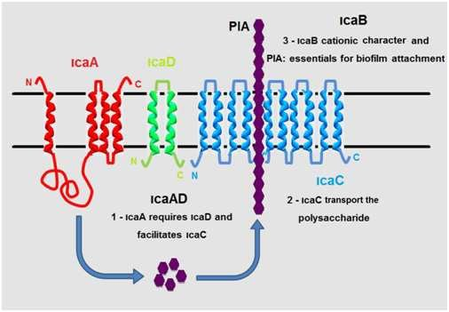
Figure 9: IcaABCD locus proteins creating PIA to be transported out of the cell into the EPS.
How “good” is the protein at its intended function?
F598 recognizes PNAG through a large groove-shaped binding site that traverses the entire light- and heavy-chain interface and accommodates at least five GlcNAc residues with an anchored binding mechanism of PNAG by F598. The Fab used in literature when analyzing F598 demonstrated retained binding to PNAG on the surface of an antibiotic-resistant, biofilm-forming strain of Staphylococcus aureus. Additionally, a model of intact F598 binding to two pentasaccharide epitopes indicates that the Fab arms can span at least 40 GlcNAc residues on an extended PNAG chain.
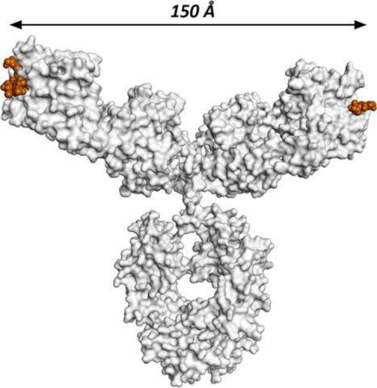
Figure 10: F598 anti PNAG antibody structure.
Has it been recombinantly expressed before? Is it membrane-bound or soluble?
The company Alopexx Pharmaceuticals' industrially produces the F598 Monoclonal Antibody from a lab at Harvard Medical School. According to Alopexx and current literature, F598 mAb binds to poly-N-acetylglucosamine (PNAG) on Microbial Surfaces Offering Potential Protective Immunity Against Multiple Pathogens. The company did one human test on the applications of F598 mAB as an antibody therapy for gonorrhea in adult males, but the research was discontinued because of poor experimental design in 2019. The antibody is wildey usd in studies surrounding the applications of mAb’s in biofilm treatments. Antibodies are also soluble and can be easily conjugated onto GNP because of this property.
Control Antibody
For a LFA, we also need an antibody that is specific to an antibody that does not have an associated antigen. Isotype controls are primary antibodies that lack specificity to the target, but match the class and type of the primary antibody used in the application. Isotype controls are used as negative controls to help differentiate non-specific background signals from specific antibody signals. The monoclonal mouse IgG1 K immunoglobulin is useful as an isotype control, which can be used to experimentally determine if the developed antibodies are functioning.
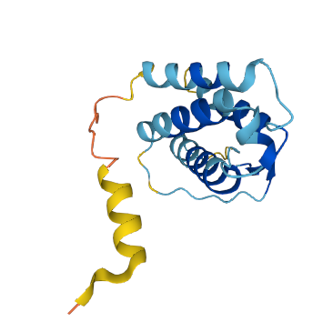
Figure 11: IgG1 K control Protein model.